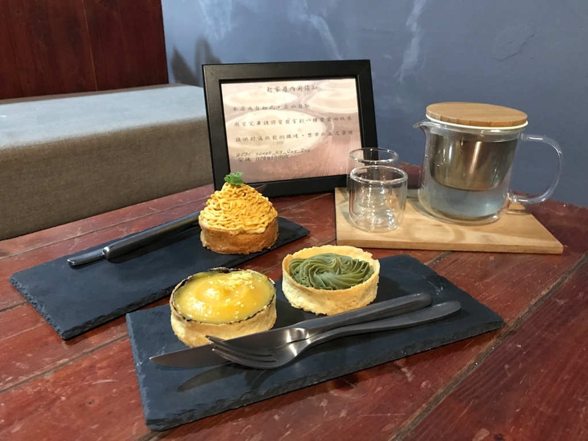

春天的陽明山花季也即將，超過3000株以上的櫻花樹接力開放，再加上緊接著登場的杜鵑花、海芋季，迎接春天即將來臨，賞花正是時候。
陽明山國家公園能賞花的地方有很多，首先由櫻花拉開春天的序幕，包括吉野櫻、八重櫻、山櫻花與昭和櫻都能在這看到它們的蹤跡，目前正值八重櫻盛開期。
而陽明山杜鵑最密集的地方，就是大家最熟悉的陽明山公園，從花鐘一帶開始，像是以日本引進的平戶杜鵑、久留米杜鵑與西洋杜鵑為最多，色彩繽紛美麗。
而來到陽明山國家公園內，賞櫻熱點包括陽明公園噴水池、櫻花溪流區、湖山綠花季內的陽明山國家公園有多種主題可以賞花，
包括花鐘、噴水池、主題園區、杜鵑茶花園、櫻花林區、桃花林區、水濂洞天、王陽明銅像都等都有不同風味的主題景點，
也營造出不同的賞花氛圍，而陽明山的山櫻花、杜鵑、茶花、桃花等，自1月至5月接力盛開，所以其實從現在起的整個春天，陽明山皆是賞花的最佳季節。